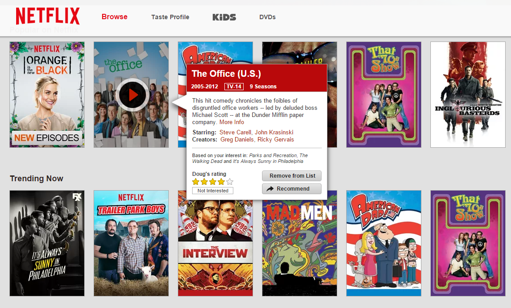

Desire2Learn's content section is split vertically into two sections. Although it is the rule of thirds, one of these sections is twice the size of the other. Plus the header has a line separating "Michigan State University" from "Desire2Learn". This line is perfectly in the middle of the larger section.
Hick's Law is all about simplicity, and I can't think of a better website to showcase simplicity than Google.com. The base site consists of the Google banner, a text box, and two buttons.
I chose to use Netflix for my affordance example. The site is meant to be a movie/tv streaming site. Instead of having some button to choose to watch a movie, Netflix has the mvie poster as a button. This greatly helps minimize any confusion when choosing something to watch.
Reddit uses chunking in that instead of showing a large amount of content for it's many posts all on one page, it only displays post titles and other important info. Reddit also splits it's site up into themed subreddits so that all user content isn't just dumped into one place.
Soundcloud has a simple, orange and white layout. It also has no ads that clutter up the site and get in the way.